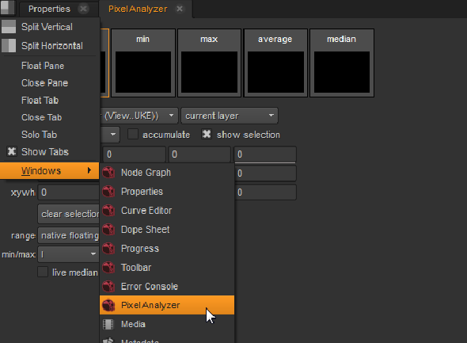

Nuke’s Pixel Analyzer enables you to analyze single and multiple pixels, or the entire image, and compare color values between Viewers. The analyzer stores current, minimum and maximum, average, and median values which can then be copied by value to controls on other nodes. For example, you might use the minimum and maximum values from an analysis to set the black and white points on another image. The analyzer is accessed from the contents menu Windows sub-menu.

The Pixel Analyzer has two modes:
• pixel selection - the default mode, allows you to make single or multiple pixel selections in the Viewer for analysis. You can also analyze an area of the Viewer using a Region of Interest tool.
• full frame - analyzes the contents of the current frame, regardless of any selections you’ve made in the Viewer.
By default, full frame samples the visible region of the Viewer. As a result, actions that change the visible area, such as zooming in and out, alter the available color values.
NOTE: The Preferences >Panels > Scopes > Include Viewer color transforms control does not affect the Pixel Analyzer.
|
|